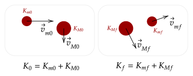
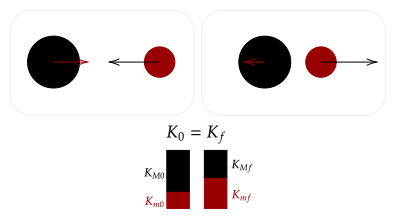
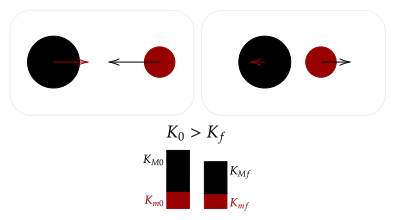
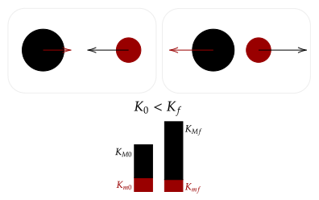

Previously, we dealt with collisions using the coefficient of restitution. Now, we revisit these collisions under the lens of kinetic energy.
We noted before that collisions transfer kinetic energy. However, clearly, not all the kinetic energy is transferred sometimes. For example, in an inelastic collision, two objects moving at the same speed towards each other move together at half the speed. Thus, it might be helpful to analyze the kinetic energy of the system involved in the collision before and after the collision.

Now, to begin our analysis of collisions using kinetic energy, it is helpful to write out the initial and final kinetic energy of the system, so let's do so here.
For the final kinetic energy, we have the following.
We started our analysis of the various types of interactions via noting the special cases. Thus, let's first examine what will happen if the kinetic energy of the system remains constant; in other words, the initial and final kinetic energy is equal. Of course, this is a special case, so it might lead us to an interaction that we know!
Now, to make more sense of it, we can move the initial and final velocities of each mass to one side, then factor out the square via using the difference of two squares.
Right now, the above equation is too complicated for us to parse; there are way too many variables, and too little information. However, we can gain one more bit of information by returning back to the conservation of momentum. If we do the same thing as we did, pairing up the initial and final velocities, we arrive at this expression.
Notice that the above has the exact same terms! Thus, we can cancel them out, and we are left with this familiar looking formula.
When we studied the coefficient of restitution, we noted that this equation came up when we dealt with elastic collisions. Thus, we have shown here that the initial and final kinetic energy of a system is equal if and only if the collision is elastic.

To further characterize this, we can imagine the two objects doing work on one another; when they collide, they do work on one another, transferring some of their kinetic energy to the other object. Of course, this transfer is usually not perfect; some of the kinetic energy is lost. However, in an elastic collision, this transfer is perfect.
Question 1
(HRK Q11.26) The following statement was taken from an exam paper: "The collision between two helium atoms is perfectly elastic, so that momentum is conserved." What do you think of this statement?
Answer
It is true that in any interaction the momentum is conserved. However, saying that momentum is conserved because the collision is elastic attributes a fact about any interaction to happening only within a specific class of collisions, which certainly isn't right.
A more logical conclusion would be that since the collision is elastic, kinetic energy is conserved.
Problem 1a
(HRK Q11.28a) Consider a one-dimensional elastic collision between a moving object A and an object B initially at rest. How would you choose the mass of B, in comparison to the mass of A, in order that B should recoil with the greatest speed?
Solution
Momentum conservation gives us the following. We choose the mass of object B to depend on a coefficient which we can choose, relative to the mass of A which we let as .
We don't care about the final velocity of A, so we choose to solve for that so we can eliminate it later.
Lets now write the conservation of kinetic energy, given that the collision is elastic.
If we factor out a , we have a curious equation. Here, we can throw out the solution where the final speed is zero; that would imply that object A just rebounds, and it certainly doesnt maximize its speed.
Now, what does this mean? It shows us that the speed of B is proportional the speed of A, that makes sense; but it is also inversely proportional the factor that we set for the mass. Thus, if the mass gets closer and closer to zero, the speed of B will increase and increase. If B were practically massless, or when our factor is zero, the maximum it could reach is the following.
Problem 1b
(HRK Q11.28b) How would you choose the mass of B, in comparison to the mass of A, in order that B should recoil with the greatest momentum?
Solution
We got this equation from the previous question.
Now, the momentum of B is given by the following.
This sort of formation is not that useful; the factor we are examining is on both the denominator and numerator. If, say, it was in the denominator, we could do the same analysis as before. We can do that by dividing the top and bottom by the factor.
Now, let's interpret. We see that as mass goes to zero, the momentum goes to zero; clearly, that isn't good. Now, as mass increases, the bottom fraction goes to zero, and thus its reaches a maximum. This is what we want. Thus, we say that to maximize momentum, we let the mass of B approach infinity, with the maximum possible momentum being the following.
Like how the initial and final momenta of a singular object may not be constant, the initial and final kinetic energy of an object can also vary; however, the total kinetic energy is conserved in an elastic collision. Thus, the following question asks how to maximize the kinetic energy. While the above two were solved using limiting cases, the question below requires calculus.
Problem 1c
(HRK Q11.28c) How would you choose the mass of B, in comparison to the mass of A, in order that B should recoil with the greatest kinetic energy?
Solution
We reuse the same equation we got from the previous two questions.
We write out the final kinetic energy of B as the following.
Now, let's try to get the maximum via using calculus. To do this, we differentiate with respect to ; once this rate is equal to zero, we have reached a maximum.
We set the left hand side to zero, and discard all the constants. Then, all we have to do is differentiate. We will have to use product rule and chain rule for this.
This shows us that the maximum is attained when the mass of B is equal to that of A. For fun, we can also get what this maximum kinetic energy is.
If in an elastic collision all the kinetic energy is transferred without any loss, then that means in an inelastic collision there is some loss of kinetic energy. This makes sense in terms of the coefficient of restitution as well; since the speed of seperation is less than that of approach, it means some speed is "lost" after collision.

We know that as the coefficient of restitution gets lower and lower, the speed "lost" gets greater and greater; thus the kinetic energy "loss" gets higher and higher as well. Thus, the maximum amount of kinetic energy is lost in a perfectly inelastic collision.
Exercise 1
(HRK E11.41) A kg railroad freight car collides with a stationary caboose car. They couple together and 27.0% of the initial kinetic energy is dissipated as heat, sound, vibrations, and so on. Find the mass of the caboose.
Solution
We first write out the conservation of momentum for an inelastic collision. We will let the mass of the caboose car be .
This would be great but we have no idea what the initial and final velocity is. However, we can use the second part of the sentence to it. We are given the ratio of that 27.0% of the initial kinetic energy is lost, so that means 73.0% is kept.
Notice how the above equation we got from momentum conservation is similar to that below. If we could get the square of the ratio of the initial to final velocity, we could solve for the mass quite easily. Let's do that, then.
Let's now subtitute in and solve for the mass.
This is a quadratic equation, now. Discarding the negative solution from the quadratic equation, we get that the mass of the caboose is around 12900kg.
Question 2
(HRK Q11.25) We have seen that the conservation of momentum may apply whether kinetic energy is conserved or not. What about the reverse; that is, does the conservation of kinetic energy imply the conservation of momentum in classical physics?
Answer
Yes. If kinetic energy is conserved, it means that the interaction is elastic. However, since kinetic energy is a scalar, it doesn't necessarily imply that momentum is conserved in more than one dimension.
The last kind of interaction that we skimmed is that of explosions, where coefficient of restitution is greater than one. These superelastic collisions have greater final kinetic energy than initial kinetic energy.

Question 3
(HRK Q11.29) In commenting on the fact that kinetic energy is not conserved in a totally inelastic collision, a student observed that kinetic energy is not conserved in an explosion and that a totally inelastic collision is merely the reverse of an explosion. Is this a useful or valid observation?
Answer
It is valid, noting that an explosion has coefficient of restitution greater than one, which is opposite that of an inelastic collision. Of course, its usefulness depends on the reader.
One lingering question is where does kinetic energy go during an inelastic collision? Where does kinetic energy come from in an explosion?
When we analyzed the CM frame, we noted that the only way to change the speed of such a frame is if there was a net external force on the object; an impulse occurs, thus there is change in momentum. With this in mind, maybe we can apply this logic to kinetic energy.